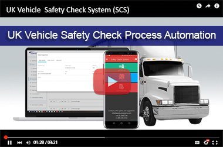

Get Started Now

DVSA UK Vehicle Safety Check Process Automation
UK Vehicle Safety Check System (SCS)



UK Vehicle Safety Check System (SCS)
UK Vehicle Safety Check System (SCS)
If you are going to get a vehicle on road in the United Kingdom (UK), you must abide by the Driver and Vehicle Standard Agency (DVSA) regulations. One of the most important requirements is that drivers must carry a walk-around check to make sure if the vehicle is safe to get on the road.
It is necessary to perform a walk-around check every time before your journey. Because the police or DVSA officer can stop you and ask for checks on your vehicle.
Moreover, you are required to record the check results and report to the responsible person in your organization. Usually, you have to carry an inside as well as an outside walk-around-test of the vehicle every 24 hours.
How Vehicle Safety Check System (SCS) Is Helpful?
Speed Auto Systems always equips the drivers and vehicle owners with efficient, digital, and smart solutions to meet their routine-wise vehicle management demands.
Speed Safety Check System (SCS) is another smart solution that enables you to drive in the UK seamlessly and smoothly. Because it offers you ultimate ease, accuracy, and efficiency to carry a walk-around check of your vehicle like never before.
Moreover, Speed – SCS provides you with a comprehensive check facility leaving no stone unturned. Speed Safety Check System offers multiple and dynamic checking options ranging from brakes to steering, tyres to tiers, and mirrors to fluids. Most importantly, it is equally effective for HGV, PSV, and personal Vans.
It Offers Even More
Speed Safety Check System is a one-stop-solution which not only enables you to abide by the DVSA regulations but also helps you to keep an eye on the updated status of your vehicle.
- It is a seamless solution – easy to use with the user-friendly interface.
- Use it confidently for HGV, PSV, and personal Van. Speed – SCS is the best fit for all.
- Carry inside as well outside walk-around check reliably, robustly, and relentlessly.
- Speed – SCS is available for Android as well as iOS users on respective App stores.
- Speed – SCS misses nothing. You can record the results of everything a vehicle does hold.
- Record, retain, and retrieve the results anytime and anywhere as it is a cloud-based solution.
Benefits of Speed Vehicle Safety Check System (SCS)
Speed Safety Check System offers multiple advantages. Some salient pros are as follow:
- No chance of errors and omissions.
- Report the results in a specific format.
- Go paperless and get rid of manual procedures.
- Record and retain the history of your vehicle maintenance.
- The digitalized solution makes you more smart and responsive.
- It is handy – pick your smartphone and start inspecting the vehicle.
- Integrate the solution with other Speed Auto systems’ products easily.
Let’s get you Started
If you want to know more about UK Saftey Check System (SCS), let’s get connected.